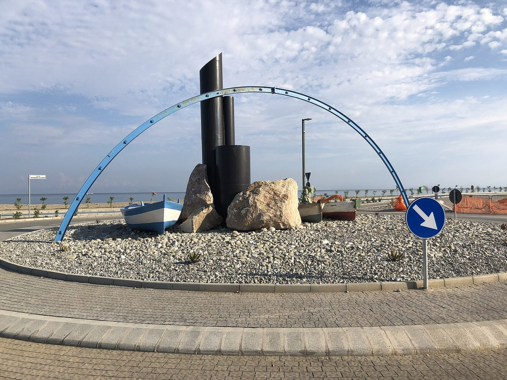

이탈리아 시칠리아 '네브로디 CER', 토레노바 유치원서 에너지 교육 시작…"학교도 비용 없이 공동체 가입할 수 있다"

조합원 약 240명 협동조합형 재생에너지 공동체, 4~5세 아이들에게 재생에너지·에너지 나눔 놀이 수업…다른 학교로 넓혀 공유 전기 이익으로 학교 전기요금 부담 덜겠다는 구상
이탈리아 시칠리아 메시나주 토레노바에서 협동조합 형태의 재생에너지 공동체(CER) '네브로디 CER(Nebrodi CER)'가 토레노바 종합학교 유치원 과정 4~5세 아이들을 대상으로 에너지 교육을 시작했다. '미션 에너지(Missione Energia)'라는 이 프로그램에서는 마스코트 '디나'와 '네오'가 놀이와 그림으로 재생에너지가 무엇인지, 에너지를 나누는 것이 왜 모두에게 좋은지를 설명한다. 네브로디 CER는 가정·기업·지역 단체가 함께하는 조합원 약 240명의 공동체로, 에너지 생산을 참여와 연대의 수단으로 삼겠다는 목표를 내세운다. 주세페 프루스테리(Giuseppe Frusteri) 회장은 "토레노바는 첫걸음일 뿐"이라며, 다른 지역 학교들도 비용 없이 공동체에 들어올 수 있고 학교의 전기 사용 지점도 공유 전기로 경제적 이익을 얻어 전기요금 부담을 덜 수 있다고 말했다. 이 공동체는 첫 단계를 마무리하며 조합원 240명 넘게, 출자금 15만 유로 넘게, 새 발전 설비 34곳, 공유 용량 약 1.2MW를 갖췄고 국가회복계획(PNRR) 지원금은 34건에 70만 유로 넘게 승인받았다고 밝혔으며, 출자 규모와 관계없이 1인 1표 원칙으로 운영한다고 했다. 학교들의 가입 일정은 밝혀지지 않았다.
시민에너지 관점
조합원 약 240명의 작은 에너지공동체가 새 설비를 늘리는 한편 유치원 교실까지 찾아간 것은, 공동체 에너지가 설비만큼이나 주민의 이해와 참여 위에 선다는 점을 보여 준다. 아이들 교육이 홍보 행사에 그치지 않겠느냐는 의문이 들 수 있지만, 학교를 비용 없이 조합에 들여 공유 전기의 이익을 나누겠다는 구상은 교육을 실제 소유와 혜택으로 잇는 길이다. 네덜란드 텍셀 섬 주민들이 만든 에너지협동조합 텍셀에네르히(TexelEnergie)처럼 작은 지역 공동체도 주민이 주인이 되면 전기를 함께 만들고 나누는 일을 오래 이어 갈 수 있다. 국내 학교 지붕 태양광도 업체 임대에 그치지 말고, 학교가 지역 에너지공동체의 구성원이 되어 수업과 전기요금 절감을 함께 얻도록 길을 열어야 한다.
출처: GLPress 2026-11-03 Giuseppe Lazzaro 원문 보기
출처: Scomunicando 2026-11-04 편집부 원문 보기
イタリア・シチリアの「ネブロディCER」、トッレノーヴァの幼稚園でエネルギー教育を開始…「学校も費用なしで共同体に加入できる」
組合員約240人の協同組合型再生可能エネルギー共同体、4〜5歳児に再エネとエネルギーの分かち合いを遊びで教える…他校にも広げ、共有電力の利益で学校の電気料金負担を軽くする構想
イタリア・シチリア州メッシーナ県トッレノーヴァで、協同組合の形をとる再生可能エネルギー共同体（CER）「ネブロディCER（Nebrodi CER）」が、トッレノーヴァ総合学校の幼稚園課程に通う4〜5歳の子どもを対象にエネルギー教育を始めた。「ミッション・エネルギー（Missione Energia）」と名付けたこのプログラムでは、マスコットの「ディナ」と「ネオ」が遊びや絵を通じて、再生可能エネルギーとは何か、エネルギーを分かち合うことがなぜ皆のためになるのかを説明する。ネブロディCERは家庭・企業・地域団体が参加する組合員約240人の共同体で、エネルギー生産を参加と連帯の手段にすることを目標に掲げている。ジュゼッペ・フルステリ（Giuseppe Frusteri）会長は「トッレノーヴァは第一歩にすぎない」と述べ、地域の他の学校も費用なしで共同体に加われ、学校の電力契約地点も共有電力によって経済的な利益を得て電気料金の負担を軽くできると話した。この共同体は第1段階を締めくくるにあたり、組合員240人超、出資金15万ユーロ超、新設の発電設備34カ所、共有容量約1.2MWを確保し、国家復興計画（PNRR）の補助金は34件で70万ユーロ超が承認されたと明らかにし、出資額にかかわらず1人1票の原則で運営するとした。学校の加入日程は明らかにされていない。
市民エネルギーの視点
組合員約240人の小さなエネルギー共同体が、新たな設備を増やす一方で幼稚園の教室まで訪ねたことは、共同体エネルギーが設備と同じくらい住民の理解と参加の上に成り立つことを示している。子ども向け教育が広報行事で終わるのではという疑問もあり得るが、学校を費用なしで組合に迎え入れ共有電力の利益を分けるという構想は、教育を実際の所有と恩恵につなげる道だ。オランダ・テセル島の住民がつくったエネルギー協同組合テセルエネルギー（TexelEnergie）のように、小さな地域共同体でも住民が主人になれば、電気を共につくり分かち合う営みを長く続けられる。韓国の学校屋根の太陽光も事業者への賃貸で終わらせず、学校が地域エネルギー共同体の一員となって授業と電気料金の節約を共に得られるよう道を開くべきだ。
出典: GLPress 2026-11-03 ジュゼッペ・ラッザロ 原文を読む
出典: Scomunicando（スコムニカンド） 2026-11-04 編集部 原文を読む
意大利西西里"内布罗迪CER"在托雷诺瓦幼儿园开展能源教育…"学校也可免费加入社区"
约240名社员的合作社型可再生能源社区，以游戏向4至5岁儿童讲解可再生能源与能源共享…计划推广到其他学校，以共享电力收益减轻学校电费负担
在意大利西西里大区墨西拿省的托雷诺瓦，以合作社形式成立的可再生能源社区（CER）"内布罗迪CER（Nebrodi CER）"面向托雷诺瓦综合学校幼儿园4至5岁的孩子启动了能源教育。在名为"能源任务（Missione Energia）"的项目中，吉祥物"迪娜"和"内奥"通过游戏和图画向孩子们讲解什么是可再生能源、为什么分享能源对大家都有好处。内布罗迪CER由家庭、企业和地方团体参与，社员约240名，目标是把能源生产变成参与和团结的工具。社区主席朱塞佩·弗鲁斯特里（Giuseppe Frusteri）说"托雷诺瓦只是第一步"，并表示当地其他学校也可以免费加入社区，学校的用电点也能通过共享电力获得经济收益、减轻电费负担。该社区表示，第一阶段结束时已有社员240多名、认缴出资15万多欧元、新建发电设施34处、共享容量约1.2MW，国家复苏计划（PNRR）补贴34项申请获批70多万欧元，并且不论出资多少都按一人一票原则运营。各学校的加入时间表尚未公布。
市民能源视角
约240名社员的小型能源社区在增建新设施的同时还走进了幼儿园教室，说明社区能源与设备一样，建立在居民的理解与参与之上。有人可能怀疑儿童教育只是宣传活动，但让学校免费加入合作社、分享共享电力收益的构想，正是把教育与实际的所有权和实惠连接起来的路径。正如荷兰特塞尔岛居民创办的能源合作社TexelEnergie那样，小小的地方社区只要居民成为主人，就能长期坚持共同发电、共同分享。韩国学校屋顶光伏也不应止于租给企业，而应让学校成为地方能源社区的一员，同时收获教学与电费节省。
来源: GLPress 2026-11-03 朱塞佩·拉扎罗 查看原文
来源: Scomunicando 2026-11-04 编辑部 查看原文
Sicily's Nebrodi CER starts energy lessons at a Torrenova kindergarten, saying schools can join the community at no cost
Cooperative renewable energy community of about 240 members teaches 4- and 5-year-olds about renewables and sharing energy through play, and plans to bring in other schools so shared-energy benefits can ease their electricity bills
Nebrodi CER, a renewable energy community set up as a cooperative in Torrenova in Sicily's province of Messina, has begun an energy education programme for 4- and 5-year-olds in the kindergarten of the Torrenova comprehensive school. In the programme, called Missione Energia, the mascots Dina and Neo use games and pictures to explain what renewable energy is and why sharing energy is good for everyone. Nebrodi CER has about 240 members, including households, businesses and local organisations, and says its aim is to turn energy production into a tool for participation and solidarity. President Giuseppe Frusteri said "Torrenova is only the first step", adding that other schools in the area can join the community at no cost and that school electricity connections can also gain financial benefits from shared energy and lighten their bills. Closing its first phase, the community said it has more than 240 members, more than €150,000 in subscribed capital, 34 new installations and about 1.2 MW of shared capacity, with more than €700,000 in national recovery plan (PNRR) grants approved across 34 applications, and that it runs on a one-member, one-vote basis regardless of each member's investment. A timetable for schools to join has not been disclosed.
Citizen Energy View
That a small energy community of about 240 members went into a kindergarten classroom while adding new installations shows that community energy rests as much on residents' understanding and participation as on equipment. Some may ask whether lessons for children are just a publicity exercise, but the plan to let schools join the cooperative at no cost and share the benefits of shared energy links education to real ownership and gains. As TexelEnergie, the energy cooperative founded by residents of the Dutch island of Texel, shows, even a small local community can keep producing and sharing power together over the long run when residents are the owners. Rooftop solar on Korean schools, too, should not end with leasing roofs to companies; schools should be able to become members of local energy communities and gain both lessons and lower electricity bills.
Source: GLPress 2026-11-03 Giuseppe Lazzaro Read the original
Source: Scomunicando 2026-11-04 Editorial staff Read the original